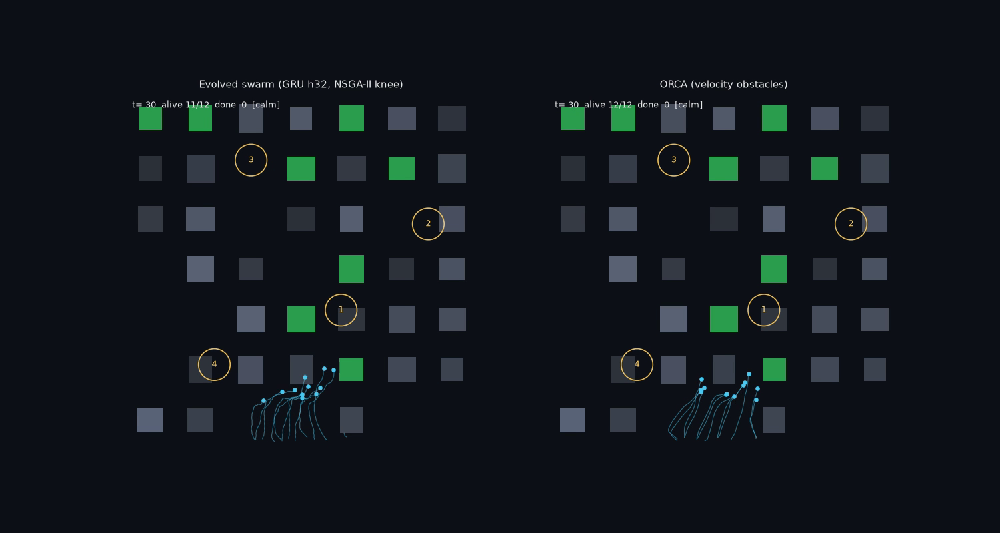

Drone swarms are typically coordinated through explicit mechanisms: a designated leader, negotiated role assignment, or continuous communication between units. However, such mechanisms scale poorly as the swarm grows, and the resulting behaviour is only as robust as the channel carrying it, degrading when communication is lost or the leader is removed.
This project is aimed at producing coordinated drone movement without any of these mechanisms. Every drone runs an identical neural network, reads only its own local sensing, and this single shared network is optimised by a genetic algorithm, so any apparent coordination must emerge from identical policies responding to a shared situation. The target behaviour is drawn from bees: holding formation, scattering when threatened, and regrouping afterwards. The main difficulty is that scattering and cohesion pull against one another, so a swarm that disperses effectively tends to remain dispersed.
The first full run reached this target, with twelve drones sharing one evolved network of roughly eight thousand parameters ending as a single reformed cluster in every held-out episode. That version has since been archived and the system is being rebuilt, evaluating the evolved policy against a velocity-obstacle baseline and a gradient-trained graph network rather than in isolation.